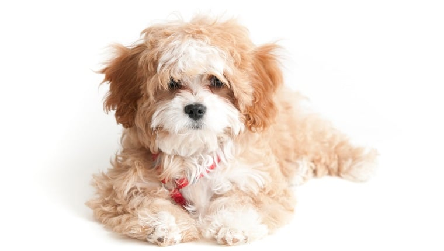

Dog Breeds
 |
American Bulldog |
They are great protective family dog. They are agile and affectionate. |
 |
Bolognese |
A great companion and is also quite creative. |
|  |
Cavapoo |
A mixed breed of Poodle and Cavalier King Charles Spaniel. They are playful and curious. |
 |
Dachshund |
They are scent-hound dogs. They are also great companions. |
 |
English Foxhound |
They are initially a hunting dog breed. Now, they are also great companions to have around. |
Dog Breeds
 |
American Wirehair |
They are playful and has loving personality. |
 |
Balinese-Javanese |
They are intelligent and refined. |
 |
Chartreux |
They are sweet, loving, and gentle. |
|
Devon Rex |
They are friendly and very social. |
 |
Egyptian Mau |
They are playful around those they know and reserved to those who are unfamiliar. |
References:
American Bulldog. (n.d.). [American Bulldog][Online Image]. Dogtime.com. Retrieved from https://dogtime.com/dog-breeds/american-bulldog#/slide/1
Bolognese. (n.d.). [Bolognese][Online Image]. Dogtime.com. Retrieved from https://dogtime.com/dog-breeds/bolognese#/slide/1
Cavapoo. (n.d.). [Cavapoo][Online Image]. Dogtime.com. Retrieved from https://dogtime.com/dog-breeds/cavapoo#/slide/1
Dachshund. (n.d.). [Dachshund][Online Image]. Dogtime.com. Retrieved from https://dogtime.com/dog-breeds/dachshund#/slide/1
English Foxhound. (n.d.). [English Foxhound][Online Image]. Dogtime.com. Retrieved from https://dogtime.com/dog-breeds/english-foxhound#/slide/1
American Wirehair. (n.d.). [American Wirehair][Online Image]. Purina.com. Retrieved from https://www.purina.com/cats/cat-breeds/american-wirehair
Balinese-Javanese. (n.d.). [Balinese-Javanese][Online Image]. Purina.com. Retrieved from https://www.purina.com/cats/cat-breeds/balinese-javanese
Chartreux. (n.d.). [Chartreux][Online Image]. Purina.com. Retrieved from https://www.purina.com/cats/cat-breeds/chartreux
Devon Rex. (n.d.). [Devon Rex][Online Image]. Purina.com. Retrieved from https://www.purina.com/cats/cat-breeds/devon-rex
Egyptian Mau. (n.d.). [Egyptian Mau][Online Image]. Purina.com. Retrieved from https://www.purina.com/cats/cat-breeds/egyptian-mau